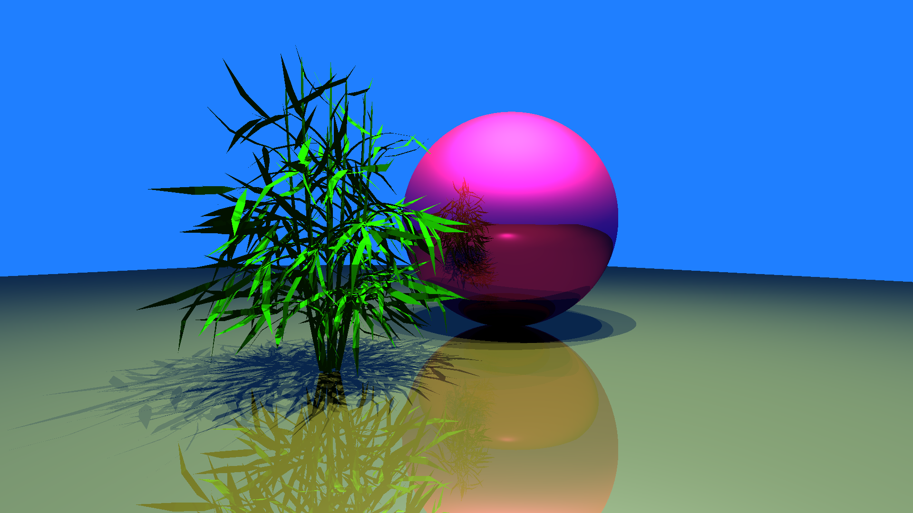
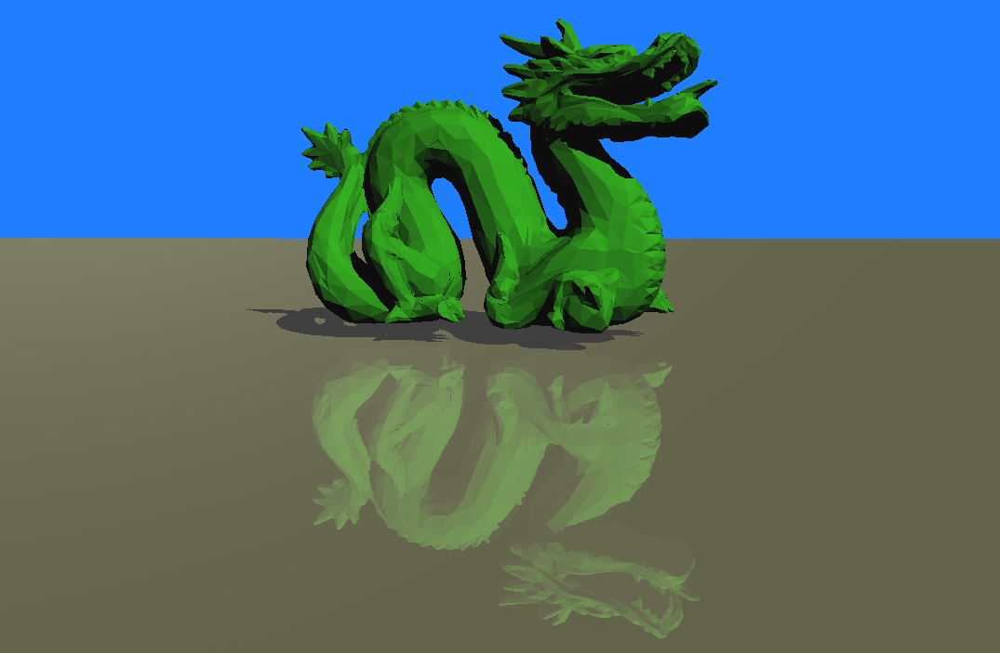
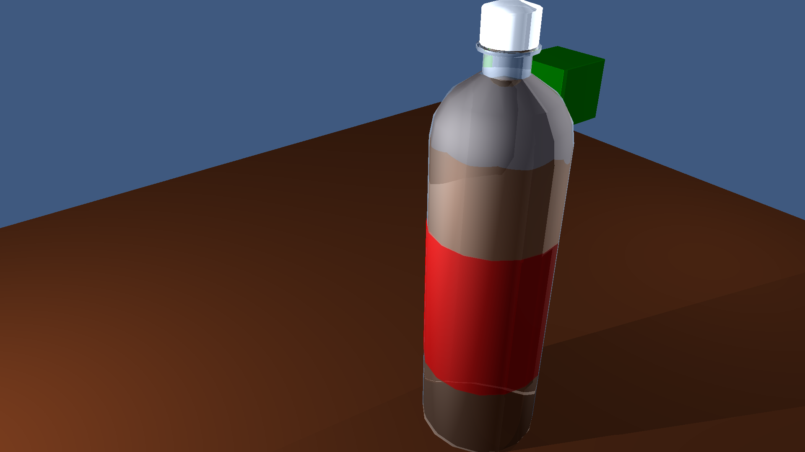

GPU Raytacer
This raytracer was originally an assignment for the course Fundamentals of Computer Graphics, however I decided to port it to the GPU as a personal project. The goal was to familiarize myself with compute shaders and GPU memory layout.
Features
Whenever a ray hits an object, it creates 3 new rays. These 3 rays each check for a different property when coloring an object.
Shadows
Shadow rays travel from an object's surface towards the light sources in a scene. If these rays hit another object on their way to a light source, then the object is placed in shadow.
Reflections
Shiny surfaces bounce light rays back into the scene. These rays may then hit other objects in the scene to create reflections.
Refractions
Transparent surfaces bend light rays as they pass through objects. These rays may then hit other objects in the scene to create a distorted refraction.
Performance
Porting this ray tracer an OpenGL compute shader made it incredibly fast. It is capable of rendering scenes at 1080 x 720 pixels in real time.
Code
The source code for this project can be found here. This project was written entirely in C++ and OpenGL, and includes CMake build support.
Credits
The scenes and models shown were created by Dr. Stephen Guy and Moses Adeagbo.